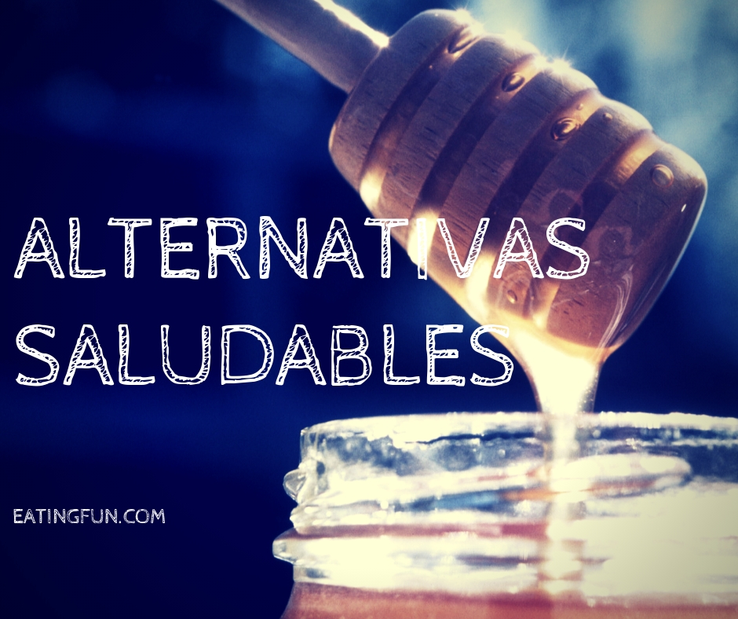

Una alimentación saludable consiste en ingerir una variedad de alimentos
que te brinden los nutrientes que necesitas para mantenerte sana, sentirte bien y tener energía.
Estos nutrientes incluyen las proteínas, los carbohidratos, las grasas, el agua, las vitaminas y los minerales.
¿Te has preguntado alguna vez si la nutrición y la salud están relacionadas?
Algunas recomendaciones para tu vida diaria..
| En lugar de esto. | Prueba esto. |
|---|---|
| Gaseosa,Pizza,Hot Dog. | Verduras cosidas,Comer fruta,No ingerir tanta caloria. |
| Papas fritas,Hamburguesa,Enlatados. | Ensaladas,Pollo cosido,Verduras crudas. |
| Tacos,Enchiladas,Repochetas. | Pescado,Tortas de avena,Gluten. |
| Chicharron,Salchichas,Fritanga. | Quesos,Espinaca,Coliflor. |